31: Confidence Intervals (Concept)
- Source: Statistical Inference via Data Science: A Modern Dive into R and the Tidyverse
- Chapter 8: Bootstrapping and Confidence Intervals
- https://moderndive.com/8-confidence-intervals.html
Setting: Pennies
Among pennies in circulation in 2019, what was the average year of minting? We have a sample size of 50 pennies.
# looking at the data set
pennies_sample# A tibble: 50 × 2
ID year
<int> <dbl>
1 1 2002
2 2 1986
3 3 2017
4 4 1988
5 5 2008
6 6 1983
7 7 2008
8 8 1996
9 9 2004
10 10 2000
# ℹ 40 more rowsSample Distribution
# visualizing the the pennies
pennies_sample %>%
ggplot(aes(x = year)) +
geom_dotplot(binwidth = 1, color = "tan3", fill = "tan4") +
labs(title = "Pennies Sample",
subtitle = "observed in 2019",
caption = "Source: Modern Dive",
x = "year",
y = "proportion")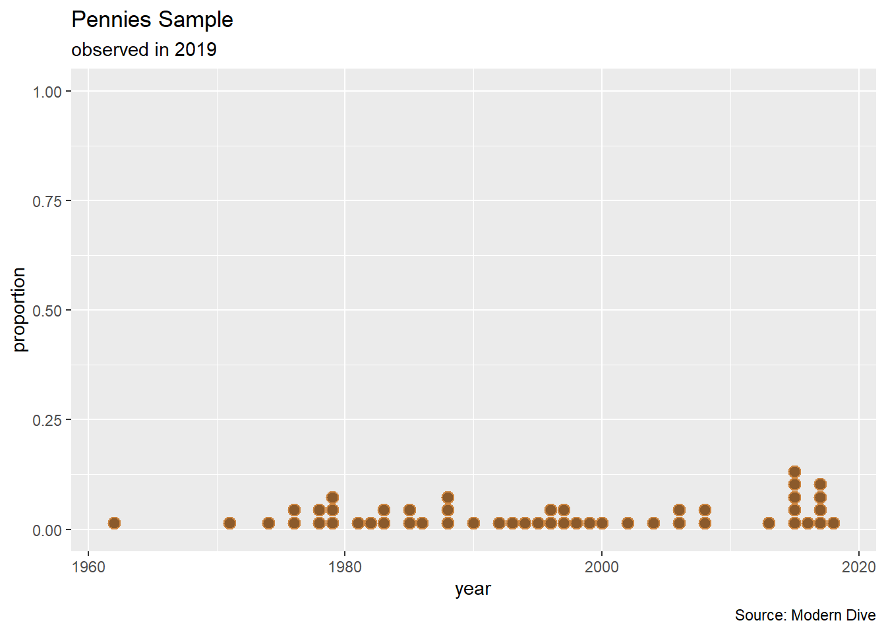
# visualizing the distribution of the pennies
p1 <- pennies_sample %>%
ggplot(aes(x = year)) +
geom_histogram(binwidth = 10, color = "tan3", fill = "tan4") +
labs(title = "Pennies Sample",
subtitle = "observed in 2019",
caption = "Source: Modern Dive")
# display graph (in addition to storing the graph in a variable)
p1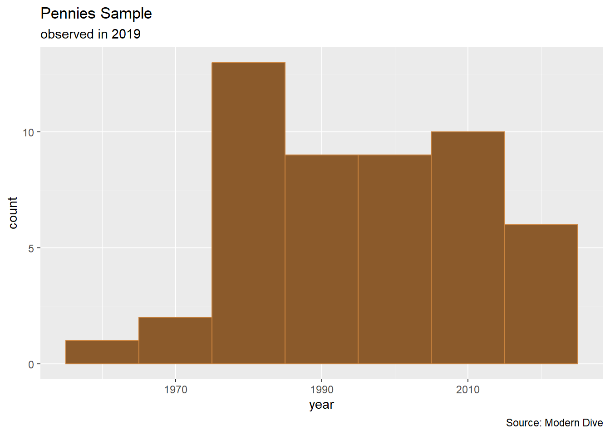
# sample mean
pennies_sample %>% summarize(xbar = mean(year))# A tibble: 1 × 1
xbar
<dbl>
1 1995.Resampling
Using the available sample of data to fabricate another sample is called resampling.
Resampling Once
Suppose that we took the 50 pennies and resampled once while sampling with replacement.
pennies_resampled_once <- pennies_sample %>%
sample_n(size = 50, replace = TRUE)# visualizing the distribution of the pennies
p2 <- pennies_resampled_once %>%
ggplot(aes(x = year)) +
geom_histogram(binwidth = 10, color = "tan3", fill = "tan4") +
labs(title = "Pennies Resampled Once",
subtitle = "sampled with replacement",
caption = "Source: Modern Dive")
# (using `patchwork` package to arrange plots side-by-side
p1 + p2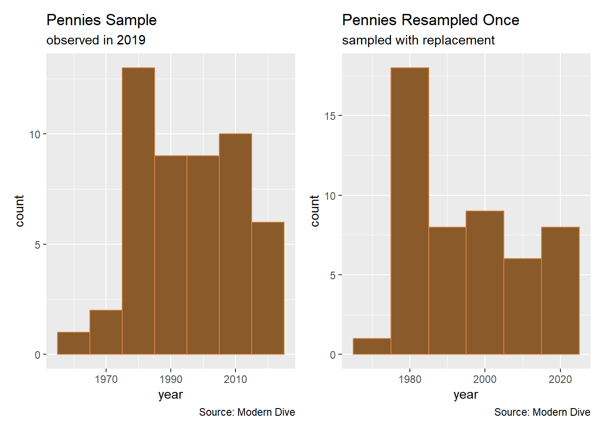
# a different sample mean
pennies_resampled_once %>% summarize(xbar = mean(year))# A tibble: 1 × 1
xbar
<dbl>
1 1995.Resampled Many Times
Suppose now that we have each person in a 30-student discussion section repeat the act of drawing those 50 pennies with replacement.
pennies_resampled_many <- pennies_sample %>%
rep_sample_n(size = 50, replace = TRUE, reps = 30)Now we have each virtual student report their mean year.
pennies_resampled_many %>%
group_by(replicate) %>%
summarize(mean_year = mean(year))# A tibble: 30 × 2
replicate mean_year
<int> <dbl>
1 1 1998.
2 2 1991.
3 3 1996.
4 4 1991.
5 5 1998.
6 6 1995.
7 7 1993.
8 8 1994.
9 9 1997.
10 10 1995.
# ℹ 20 more rowssummary(pennies_sample$year) Min. 1st Qu. Median Mean 3rd Qu. Max.
1962 1983 1996 1995 2008 2018 pennies_resampled_many %>%
group_by(replicate) %>%
mutate(mean_year = mean(year)) %>%
ungroup() %>%
select(replicate, mean_year) %>%
distinct() %>%
ggplot(aes(x = mean_year)) +
geom_histogram(binwidth = 1, color = "tan3", fill = "tan4") +
labs(title = "Resampling Results",
subtitle = "N = 30 resamples",
caption = "Source: Modern Dive")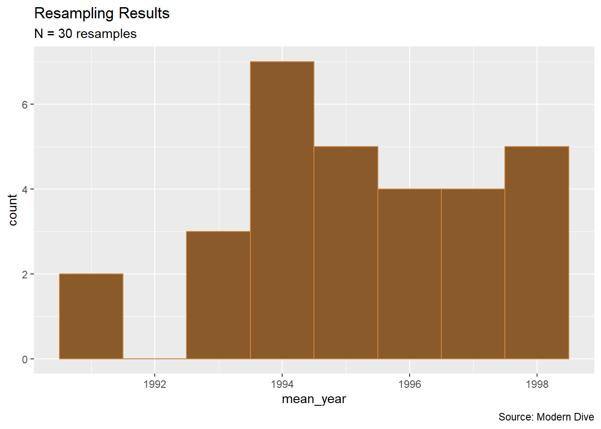
Out of curiosity, let us push this process to \(N = 1337\) resamples.
pennies_resampled_means <- pennies_sample %>%
rep_sample_n(size = 50, replace = TRUE, reps = 1337) %>%
group_by(replicate) %>%
mutate(mean_year = mean(year)) %>%
ungroup() %>%
select(replicate, mean_year) %>%
distinct()
pennies_resampled_means %>%
ggplot(aes(x = mean_year)) +
geom_histogram(binwidth = 1, color = "tan3", fill = "tan4") +
labs(title = "Resampling Results",
subtitle = "N = 1337 resamples",
caption = "Source: Modern Dive")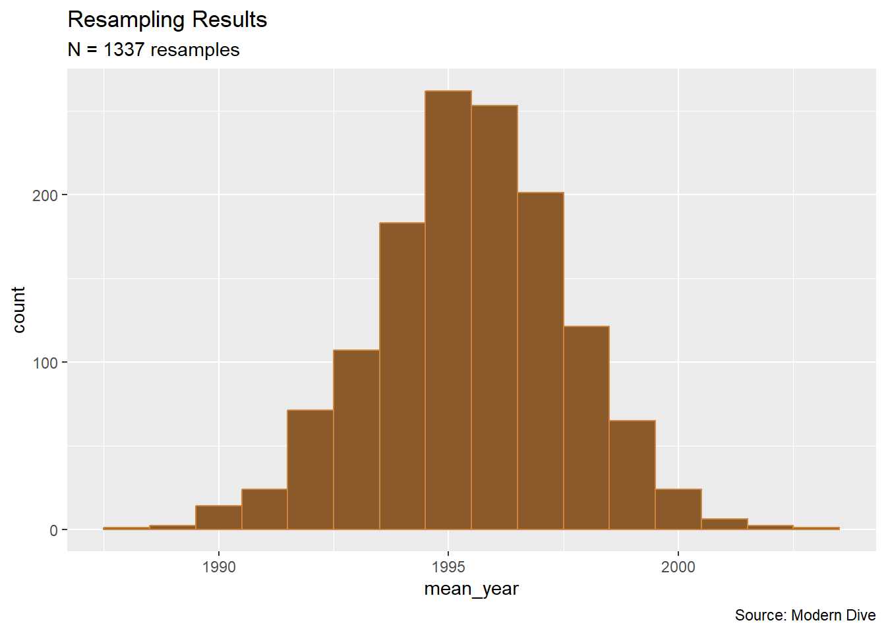
Confidence Intervals
Toward Confidence Intervals
The standard deviation of a sampling distribution is called the standard error.
xbar <- mean(pennies_resampled_means$mean_year)
SE <- sd(pennies_resampled_means$mean_year)We can build a 95% confidence interval by computing \(\bar{x} \pm 1.96*SE\)
c(xbar - 1.96*SE, xbar + 1.96*SE)[1] 1991.377 1999.624pennies_resampled_means %>%
ggplot(aes(x = mean_year)) +
geom_histogram(binwidth = 1, color = "tan3", fill = "tan4") +
geom_vline(xintercept = c(xbar - 1.96*SE, xbar + 1.96*SE), color = "yellow", linewidth = 2) +
labs(title = "Resampling Results",
subtitle = "N = 1337 resamples",
caption = "Source: Modern Dive") +
theme_minimal()Using the infer package
pennies_sample %>%
specify(response = year)Response: year (numeric)
# A tibble: 50 × 1
year
<dbl>
1 2002
2 1986
3 2017
4 1988
5 2008
6 1983
7 2008
8 1996
9 2004
10 2000
# ℹ 40 more rowspennies_sample %>%
specify(response = year) %>%
calculate(stat = "mean")Response: year (numeric)
# A tibble: 1 × 1
stat
<dbl>
1 1995.pennies_sample %>%
specify(response = year) %>%
generate(reps = 1337, type = "bootstrap")Response: year (numeric)
# A tibble: 66,850 × 2
# Groups: replicate [1,337]
replicate year
<int> <dbl>
1 1 1983
2 1 1992
3 1 2015
4 1 2018
5 1 1997
6 1 1988
7 1 2017
8 1 1976
9 1 1985
10 1 2015
# ℹ 66,840 more rowsbootstrap_distribution <- pennies_sample %>%
specify(response = year) %>%
generate(reps = 1337, type = "bootstrap") %>%
calculate(stat = "mean")
# print
bootstrap_distributionResponse: year (numeric)
# A tibble: 1,337 × 2
replicate stat
<int> <dbl>
1 1 1998.
2 2 1994.
3 3 1990.
4 4 1998.
5 5 1996.
6 6 1996.
7 7 1998.
8 8 1996.
9 9 1998.
10 10 1993.
# ℹ 1,327 more rowsBootstrap Distribution
The resulting distribution from sampling without replacement is called a bootstrap distribution
visualise(bootstrap_distribution)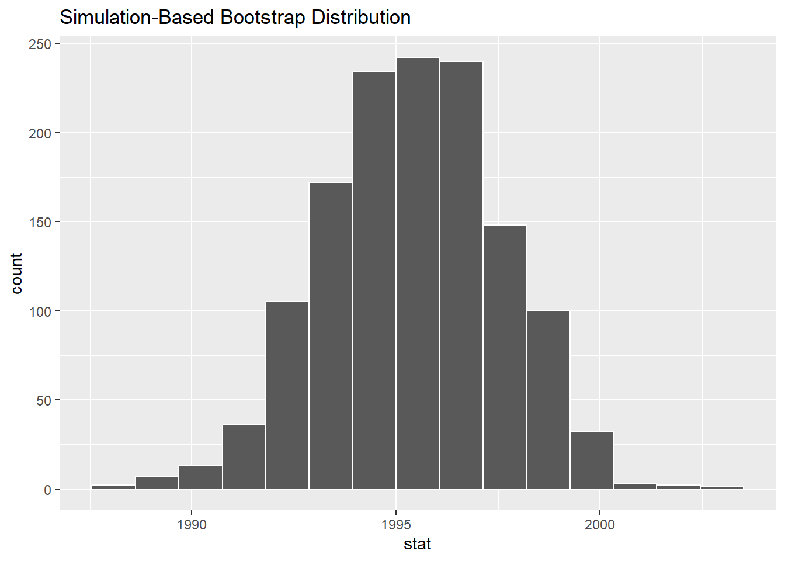
Infer get_ci()
There are also wrappers in the infer package to extract the confidence interval
bootstrap_distribution %>%
get_confidence_interval(point_estimate = mean(bootstrap_distribution$stat),
level = 0.95, type = "se")# A tibble: 1 × 2
lower_ci upper_ci
<dbl> <dbl>
1 1991. 2000.Alternatively, we can use percentiles to build our confidence intervals. This is useful when the data is not normally distributed.
bootstrap_distribution %>%
get_confidence_interval(level = 0.95, type = "percentile")# A tibble: 1 × 2
lower_ci upper_ci
<dbl> <dbl>
1 1991. 1999.SE_CI <- bootstrap_distribution %>%
get_ci(point_estimate = mean(bootstrap_distribution$stat),
level = 0.95, type = "se")
visualize(bootstrap_distribution) +
shade_ci(endpoints = SE_CI, color = "#DAA900", fill = "#002856")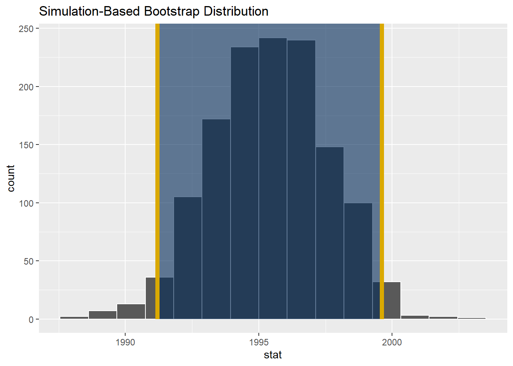
Inference
How do we describe confidence intervals?
Example: Bowl of Marbles
The bowl data was literally a classroom bowl of red and white marbles
bowl %>%
ggplot(aes(x = color, fill = color)) +
geom_bar(stat = "count", color = "black") +
scale_fill_manual(values = c("red", "white")) +
labs(title = "Bowl of Marbles",
subtitle = "population is known",
caption = "Source: Modern Dive")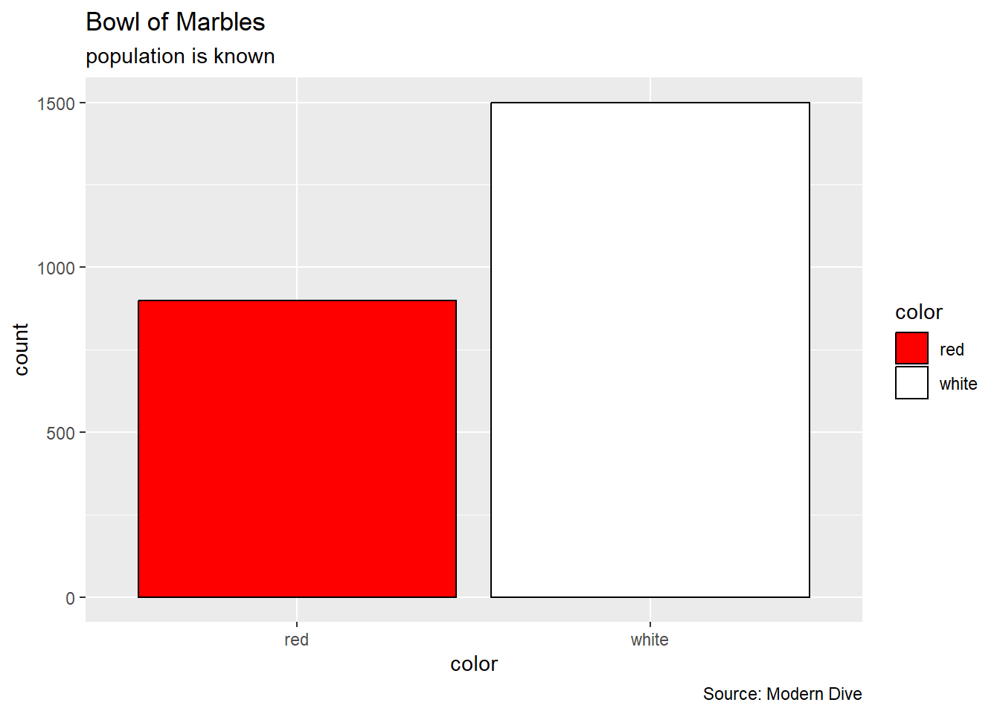
where we know the true proportion of red marbles.
bowl %>%
summarize(proportion_red = mean(color == "red"))# A tibble: 1 × 1
proportion_red
<dbl>
1 0.375Simulations
CI_simulation <- function(confidence = 95, sample_size = 25, num_intervals = 10){
# Constants
alpha <- 1 - confidence/100
n <- sample_size
N <- num_intervals
proportion_red <- 0.375 #true population proportion
# vector allocation
left <- rep(NA, N)
right <- rep(NA, N)
captured <- rep(NA, N)
for(i in 1:N){
this_sample <- sample(bowl$color, n, replace = TRUE)
phat <- mean(this_sample == "red") #sample proportion
#margin of error
E <- qnorm(1 - alpha/2)*sqrt( phat*(1-phat)/n)
#this confidence interval
left[i] <- phat - E
right[i] <- phat + E
#did the confidence interval capture the true proportion?
captured[i] <- ifelse(left[i] <= proportion_red & right[i] >= proportion_red, TRUE, FALSE)
}
# graph
df <- data.frame(left, right, captured)
ggplot(df, aes(x = left, y = 1:N)) +
geom_vline(xintercept = proportion_red, color = "black") +
geom_segment(aes(x = left, y = 1:N,
xend = right, yend = 1:N,
color = captured)) +
labs(title = "Simulation of bowl samples",
subtitle = paste0("alpha = ", alpha, ", n = ", n),
caption = "Bio 175",
x = "proportion red",
y = "iteration") +
theme_minimal()
}CI_simulation(confidence = 95, sample_size = 25, num_intervals = 100)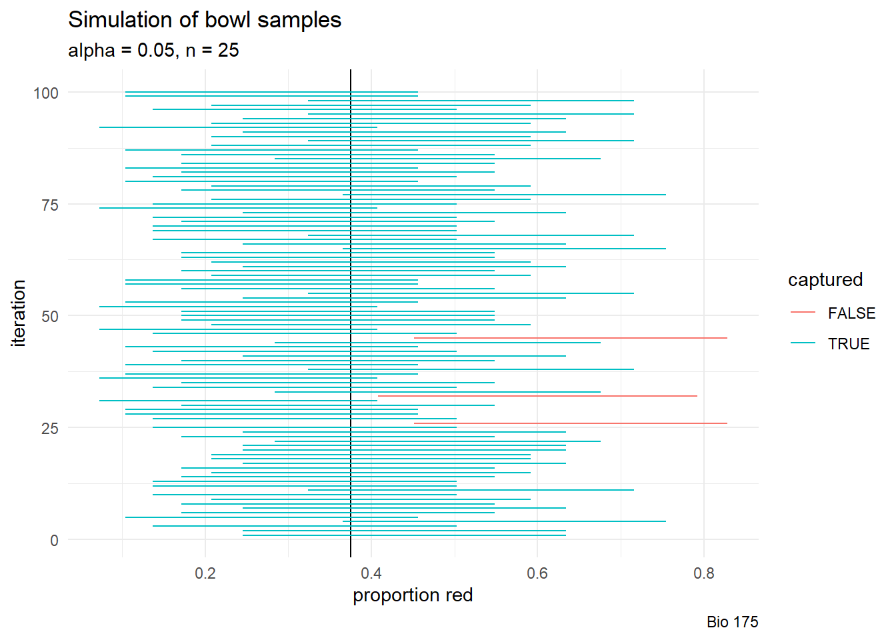
p1 <- CI_simulation(80, 25, 100) + theme(legend.position = "none")
p2 <- CI_simulation(95, 25, 100) + theme(legend.position = "none")
p3 <- CI_simulation(99, 25, 100) + theme(legend.position = "none")
p1 + p2 + p3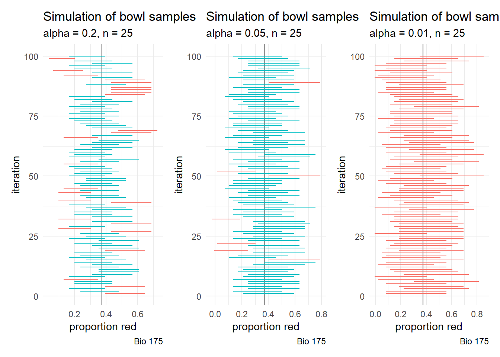
As we request more confidence, the confidence intervals are more likely to include the true population parameter.
p4 <- CI_simulation(95, 25, 100) + theme(legend.position = "none")
p5 <- CI_simulation(95, 100, 100) + theme(legend.position = "none")
p6 <- CI_simulation(95, 400, 100) + theme(legend.position = "none")
p4 + p5 + p6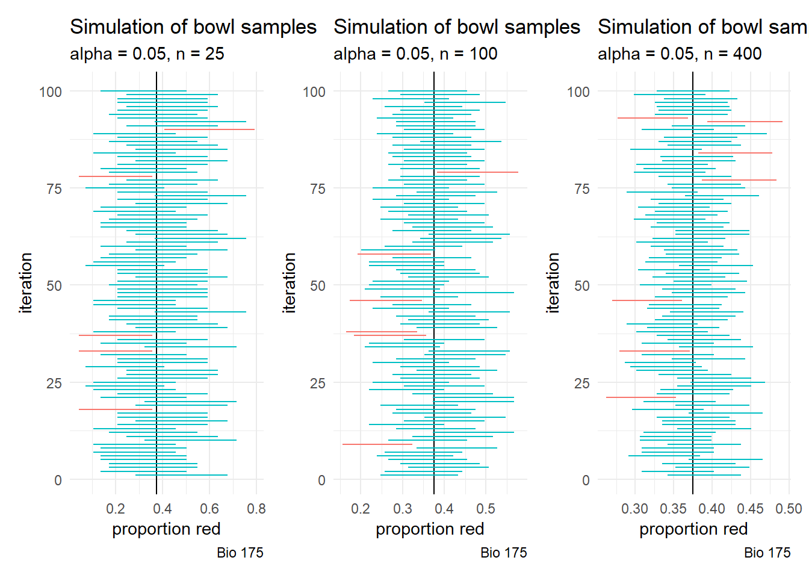
As we use larger sample sizes, the confidence intervals are more likely to include the true population parameter.
Looking Ahead
WHW10 (due today)
WHW11
LHW9
LHW10
Final Exam will be on May 6
- more information in weekly announcement